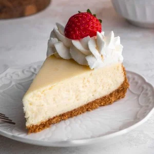

Cheesecake

Homepage
This is a cheesecake recipe that has been passed down by the women in my family.
I am sharing this today as it is one of my life motives that sharing is, indeed, caring.
Ingredients
Graham Cracker Crust
- 1 ½ cups graham cracker crumbs
- 2 Tablespoons sugar
- 1 Tablespoon brown sugar
- 7 Tablespoons butter
Cheesecake filling
- 32 oz cream cheese (softened to room temperature)
- 1 cup sugar
- ⅔ cups sour cream
- 1 ½ teaspoons vanilla extract
- ⅛ teaspoon salt
- 4 large eggs (room temperature, lightly beaten)
Steps
Preparing the crust
- Preheat oven to 325F (160C).
- Prepare Graham Cracker crust first by combining graham cracker crumbs, sugar, and brown sugar, and stirring well. Add melted butter and use a fork to combine ingredients well.
- Pour crumbs into a 9” Springform pan and press firmly into the bottom and up the sides of your pan. Set aside.
Making the filling
- Add cream cheese in a bowl and stir until smooth and creamy
- Add sugar and stir again until creamy
- Add in sour cream, vanilla extract, and salt. Stir until well-combined.
- While stirring the mixture on a low speed, gradually add the lightly beaten eggs, one at a time. Make sure all the ingredients are well combined.
- Pour the cheesecake batter into the prepared springform pan.
- Bake the cheesecake in the center of your oven at 325F (160C) for about 75 minutes. The cheesecake should have a light golden brown edges with the center being jiggly.
- Remove from the oven and let the cheesecake cool for around 10 minutes.
- Use a knife to gently loosen the crust from the springform.
- Let the cheesecake cool for another 1.2 hours before transferring to the fridge. Let the cheesecake cool atleast 6 hours, preferably overnight.
- Enjoy!